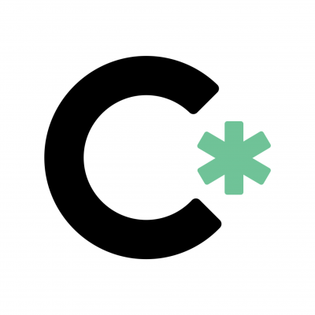

Experience
Graphic and Web Design Intern
November 2018 - Present
- Create visually appealing graphical user interfaces of various CSforALL research projects to produce designs that can process data, visualize data and more.
- Work alongside Research Associates in developing designs of graphical artifacts and data visualizations to support project findings.

Lead Technical Program Manager
August 2018 - December 2018
- Lead 4 other Technical Program Managers at City College and provided first line support to students in Facebook-CodePath Cyber Security Course.
- Taught in-class sessions at City College and assisted students with in-class labs, providing an introduction to the current week’s lesson.
- Coordinated with Facebook’s Information Security Program & Operations Manager, CodePath Instructors, and CCNY Faculty to oversee the course as students advance.
Teacher / Web Developer Intern
June 2017 – August 2017
- Created extensive lesson plans to teach Game Design to students (K-8) using Python and JavaScript.
- Assisted in implementing mobile-friendly website and increased User Interface that helped increased Starcoder workshop engagement by 50%.